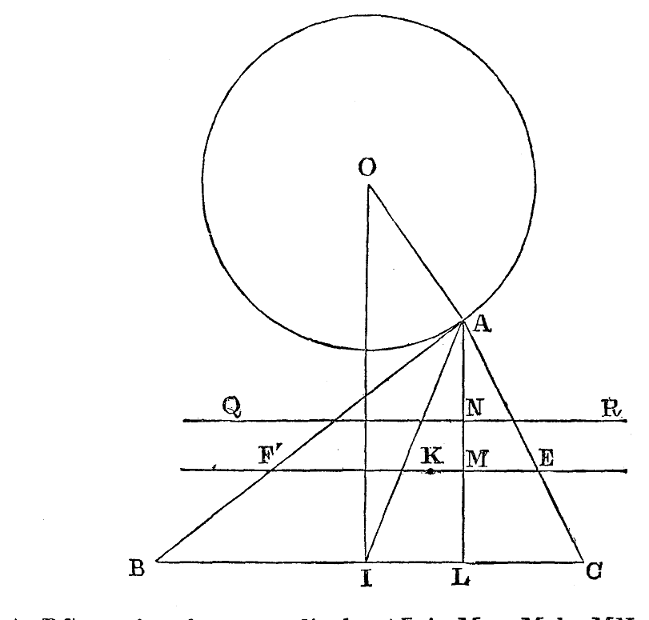

Supplementary Chapter, Section VIII: Miscellaneous Exercises¶
John Casey — Supplementary Chapter on the Recent Elementary Geometry of the Triangle (5th ed., 1888, pp. 231–248)
f. 0257 · p. 231
Miscellaneous Exercises (Exs. 1–158, ff. 0257–0274, pp. 231–248).¶
If from the symmedian point of any triangle perpendiculars be drawn to its sides, the lines joining their feet are at right angles to the medians.
If $ACB$ be any triangle, $CL$ a perpendicular on $AB$; prove that $AC$ and $BL$ are divided proportionally by the antiparallel to $BC$ through the symmedian point.
The middle point of any side of a triangle, and the middle point of the corresponding perpendicular, are collinear with the symmedian point.
If $K$ be the symmedian point, and $G$ the centroid of the triangle $ABC$; then—$1^\circ$, the diameters of the circumcircles of $AKB, BKC, CKA$ are inversely proportional to the medians; $2^\circ$, the diameters of the circumcircles of $AGB, BGC, CGA$ are inversely proportional to $AK, BK, CK$.
Proof Sketch.—Let $K$ be the symmedian point; through $K$ draw $F'E \parallel BC$, cutting the perpendicular $AL$ in $M$. Making $MN = \frac{1}{2}LM$ and $QR \parallel BC$ through $L$, bisect $BC$ at $I$ and draw $IO \perp BC$ with $2 IO \cdot MN = BI^2$. Then $IA^2 = 2 IO \cdot NA$, showing that the locus of $A$ is a circle of centre $O$ coaxial with the point $I$ and the line $QR$, with $\angle BOC = 2\omega$.


f. 0264 · p. 238
Steiner’s Point, Tarry’s Point & Simson Lines (ff. ``0264–0272``). Spanning Exercises 45–145, Casey assembles problems on co-symmedian triangles, orthologic triangles, Steiner's point $S_t = X(99)$ and Tarry's point $T_r = X(98)$ as diametral antipodes on the circumcircle (joining the circumcircle intersections of parallels and perpendiculars to the sides of Brocard’s First Triangle), Simson's line, and Tucker's and Taylor's circles.
f. 0273 · p. 247
:person:`de Longchamps’ <longchamps>` Circle (Exercises 146–158, ff. ``0273–0274``, pp. 247–248).
The circle cutting orthogonally the three circles of Ex. 137 (studied by M. de Longchamps in Journal de Mathématiques Spéciales, 1886, here denoted $L$, with radical axis $\lambda$ relative to the circumcircle—real only for obtuse-angled triangles) terminates Casey’s 5th Edition with thirteen remarkable propositions:
Ex. 146: The centre of $L$ is the symmetrique of the orthocentre $H$ of $ABC$, with respect to its circumcentre $O$ (de Longchamps Point $L = 2O - H = X(20)$ on the Euler line).
Ex. 147: The radius of $L$ is equal to the diameter of the polar circle of $ABC$.
Ex. 148: $L$ is orthogonal to the three median-radius circles centered at the side midpoints.
Ex. 150–152: $\lambda$ is the polar of the centroid $G$ with respect to $L$, the isotomic conjugate of the Lemoine line, and parallel to the join of the isotomic conjugates of the Brocard points.
Ex. 154–158: $L$ meets the circumcircle in isotomic points; the circle on orthocentre $H$ of radius $2R$ is coaxial with $L$ and $(O)$; the centroid $G$ is a centre of similitude of $L$ and the polar circle; and $G$ divides the distance between the radical axis of the circumcircle and polar circle and $\lambda$ in the ratio $2 : 1$.